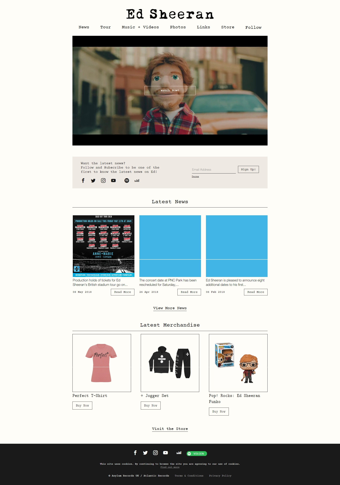
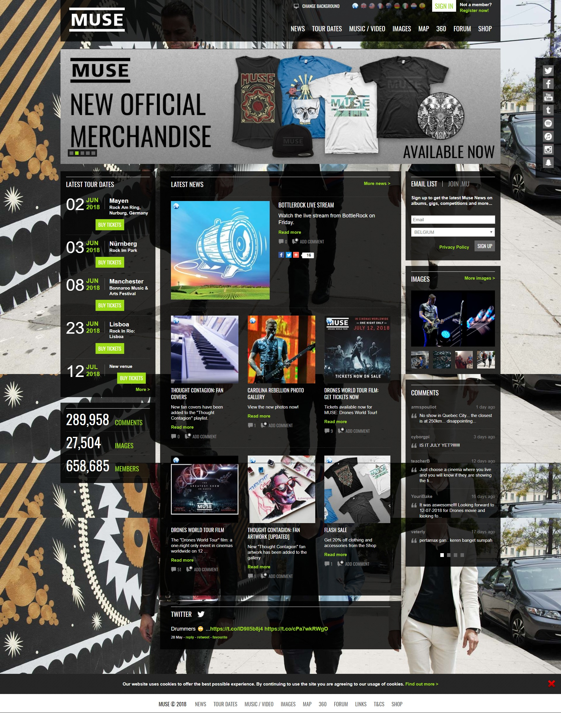
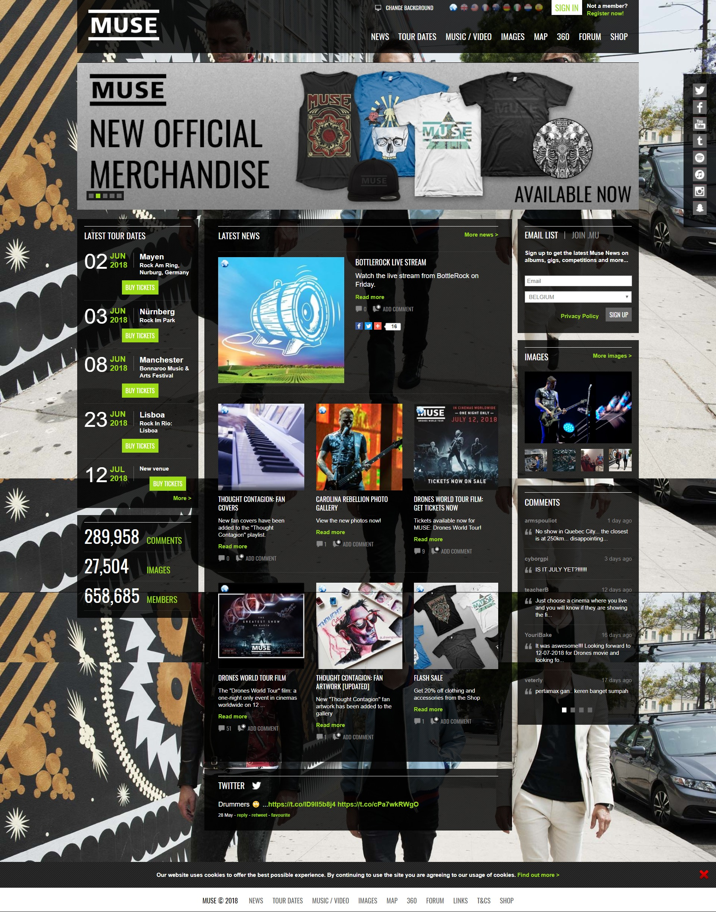

Concurrentie analyse
Websites

 

+ Positieve zaken +
Ed Sheeran (1)
- In de footer, links naar sociale media en naar musicplayers.
- Op de home pagina, een deel met laatste nieuws.
- Optie om in te loggen, zodat je dingen kan winnen
- Overzichtelijk design, heel strak en in dezelfde stijl als de artiest.
Imagine Dragons (2)
- Opties om foto's te liken op de site zelf.
- Er komt een hover over de foto's
- Pagina begint met een introductie van de band.
Muse (3)
- De eerste pagina is een futuristisch design waarop je hun nieuwste liedje kan beluisteren en bekijken.
- Internationaal bekend, dus de website is in verschillende talen.
- Aan de zijkant een balk met toekomstige optredens. Waar, wanneer en hoe te bestellen.
- De achtergrondafbeelding komt heel sterk en krachtig uit. Hierin komt het genre duidelijk naar boven.
- Negatieve zaken -
Ed Sheeran (1)
- Er is een balk in het midden die kan doen verwarren en denken dat je al onderaan zit.
- Het ontwerp is naar mijn mening iets te simpel en mist dat stukje om een fan nog geïnteresseerder te krijgen.
- De corpsen probeerden ze hetzelfde te doen als het logo, waardoor dit een slechte combinatie van corpsen geeft.
- Op een laatste pagina is de uitlijning gecentreerd. Iets dat niet past als je kolommen gebruikt.
Imagine Dragons (2)
- De tekst op de home pagina loopt te veel uit en verveeld dus de lezer.
- Een kleine technische fout. De navigatie stond niet gecentreerd.
- Sommige kleuren combinaties werken niet.
Muse (3)
- De pagina lijkt meer op een website van de krant.
- Door de transparantie van het vlak komt dit niet ordelijk uit met de achtergrond foto.
- De video's konden beter uitgezet worden.